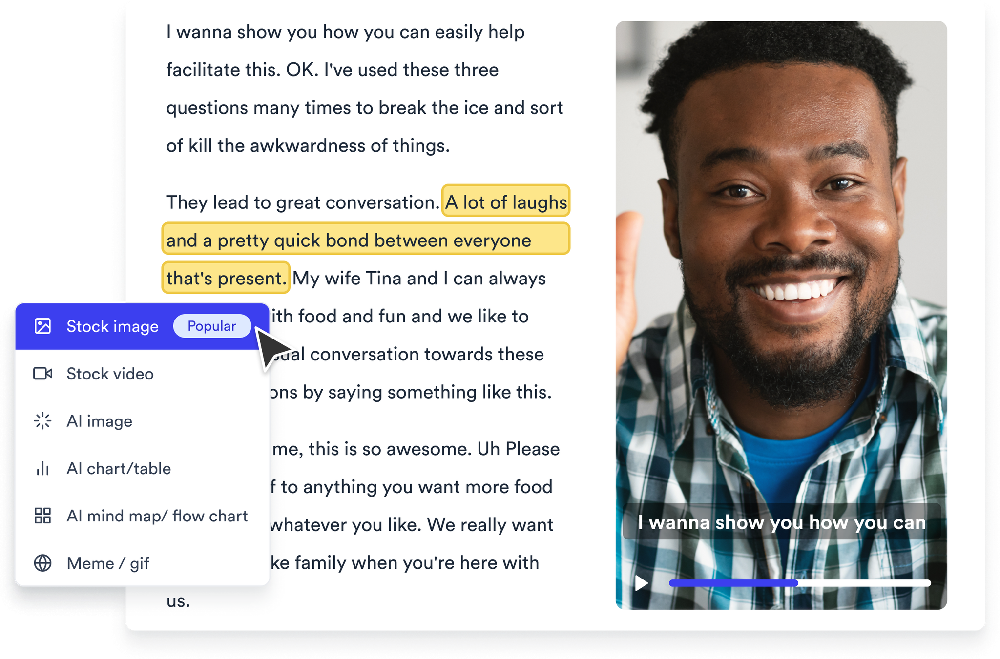
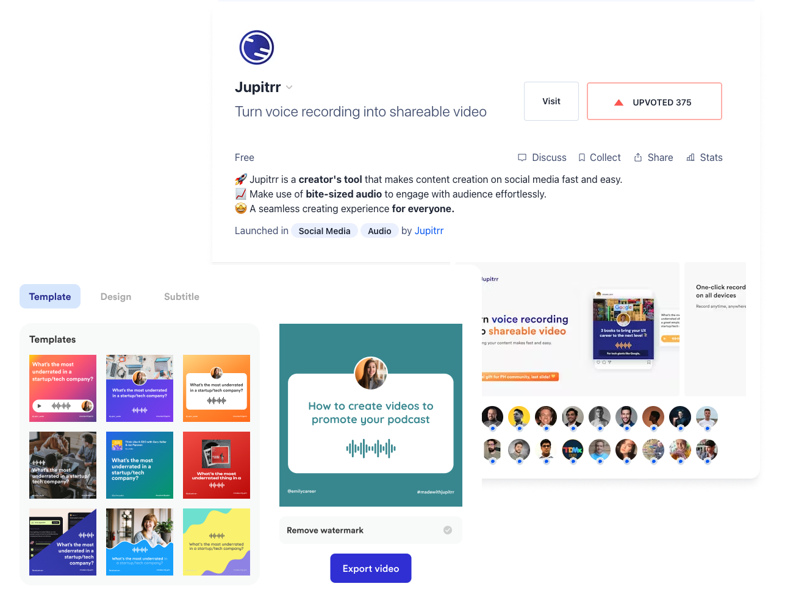
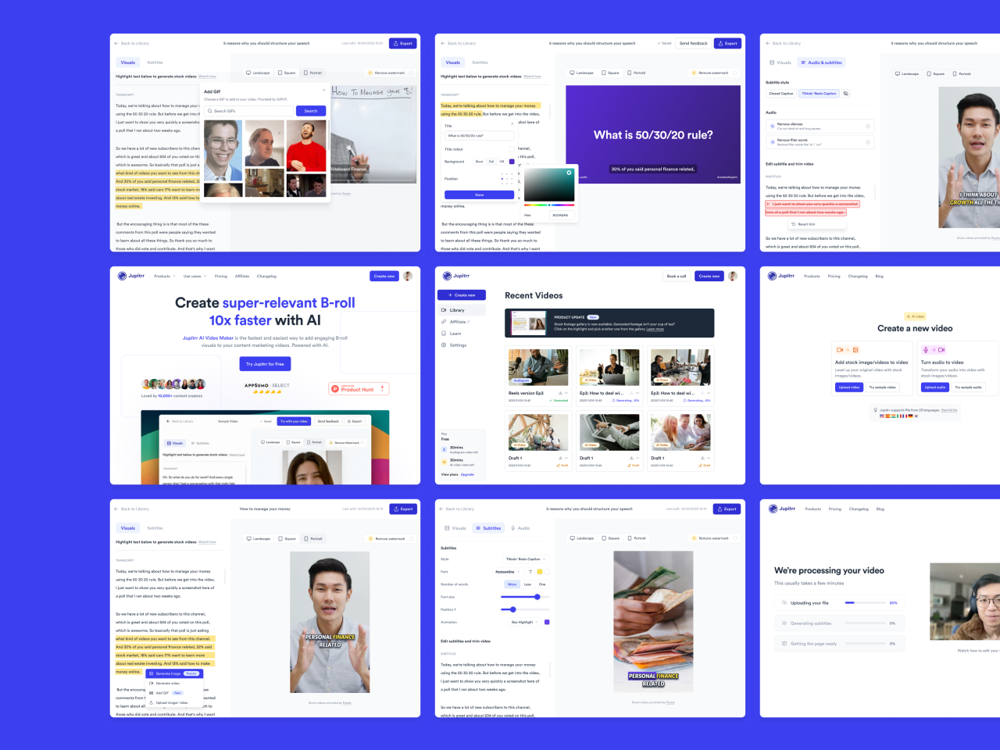
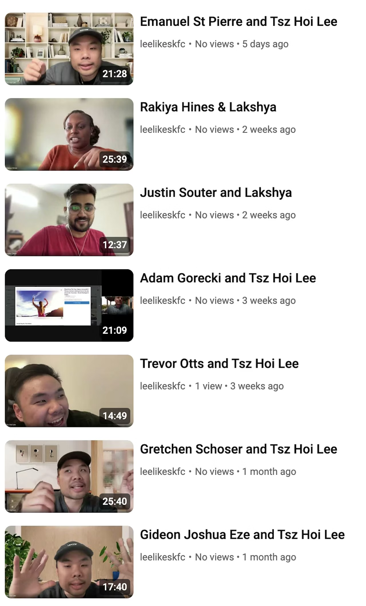
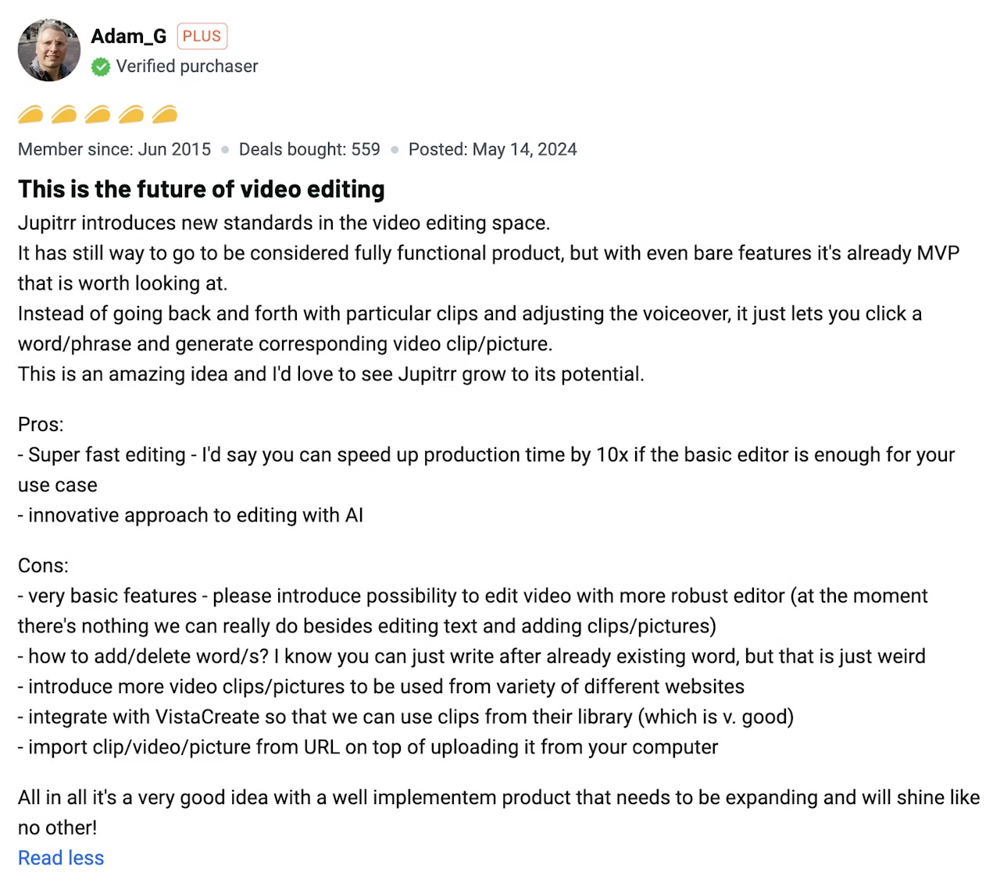
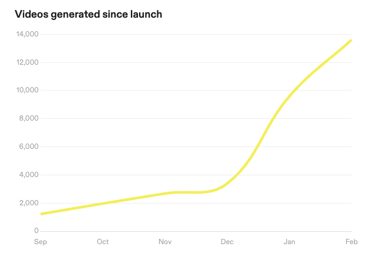

Jan 20, 2024
From the first $6.99 in 2 years to $12K in a week
Learning how to iterate fast with customer feedback.
In March 2022, I wrote 6 months learning - building an audiogram tool, and almost two years later, after we just launched our new AI video maker on AppSumo, I think it’s time to reflect on some of the new learnings.

Making our first dollar
After a six-month pause in developing the audiogram tool, we resumed work around Sep 2022. Jupitrr was experiencing organic growth without active promotion, but we wanted to validate the market further. So, before investing in more features, we decided to launch Jupitrr's first subscription plan.
On November 18, 2022, Jupitrr earned its first dollar from a $6.99 Starter plan purchased by Emmanuel, our very first customer. It took us longer than expected, but looking back it was a significant milestone.
This wasn’t scaling up
After launching on Product Hunt and introducing the subscription plan, we recognized the potential in the audiogram tool market. It was a stable market with a good user base and revenue potential, with only a few competitors. While it was a promising micro-SaaS business, we aspired for more.
We didn’t get into startups for that. We wanted to build something exciting, innovative, genuinely valuable to millions.

Audiogram is easy to make, but no one wants to watch it
The reason why our audiogram tool wasn’t scaling simply because audiograms weren't effectively converting in today's social media landscape. Users enjoyed using Jupitrr to create audiogram videos, sharing them on platforms like Instagram and Facebook. However, these videos didn't garner the views or likes compared to other content types. In an era dominated by visually engaging vertical videos, static audiograms with only subtitles and waveforms or extended monologues weren't capturing attention.
“I love Jupitrr, I love how easy it is to create videos. But it just not getting views on Instagram.” Az Samad, Musician, content creator
We recognized the need to create visually appealing content that enhances storytelling. At the same time, OpenAI launched ChatGPT, sparking a new idea.
From content to B-rolls
With the AI buzz, we explored how Jupitrr could integrate AI into our product. While we lacked the resources to build our own generative AI model, we believed that language models like ChatGPT could be valuable.
This led to the concept of the “AI Slideshow Video” (btw this name doesn’t really work for growth). Rather than sticking with static audiogram templates, we aimed to help users incorporate meaningful B-rolls into their videos, sourced from stock imagery, flowcharts, tables, and slide decks. It was an evolution of our audio-to-video concept, promising better and more engaging outcomes.

Make it easier to ship
We outlined our idea, created wireframes, and developed a prototype with stock videos as the initial B-roll options. However, we encountered a significant obstacle: processing the extensive content required for a 10-minute audio track and fine-tuning the generated video demanded substantial effort.
To validate the concept quickly, we decided to pivot on the use case. Instead of starting with audio, we shifted our focus to video. This new approach allowed users to add visuals on demand to their original videos, reducing processing requirements to 5-10 visuals per video. This change not only lowered costs and helped us ship faster, but also expanded our potential user base to video creators.
Ship with a pricing plan
When we launched our audiogram tool on Product Hunt, one unexpected question arose frequently: “do you have a pricing plan?”. At that time, we didn't, primarily because we considered pricing to be beyond the scope of the MVP. We were unsure if what we offered could command a price.
This time, we had a different perspective. We decided to start charging from the beginning because we believed our new product was genuinely valuable. Launching with a pricing plan would not only validate the concept's demand but also help us understand how much people were willing to pay. Additionally, it signaled our commitment to the project and strengthened our brand identity.
If no one wants talk to you, the idea probably isn’t that great
It's a well-known startup rule: talk to users. In the past, we attempted to engage with users while building previous versions, but no one really wanted to talk to us. Looking back, we should have considered this as a signal rather than remaining overly optimistic, especially since the audience lacked a genuine need. Talking to users shouldn't be a checkbox to tick off; it should be a meaningful interaction.
This time, we experienced things differently. We started off sending mass cold emails, and soon having new people booking our Calendly every week (great achievement considering there’s no $25 amazon coupons). We can see the genuine excitement from people we talked to, especially when they come with a long list of feedback. I still think there are so much more reactions to get here, but I think the lesson here is that, if no one hyped about it, the idea probably isn’t good enough.


With this, we believe we've truly fulfilled the goal of engaging with users for the first time in our startup journey. This engagement has become our most significant asset in the last 6-8 months. Since building our first prototype, we've conducted approximately 40 interviews, averaging at least one per week last year. Some might says one per week is not a lot, but when it accumulates over time, it has a great impact in every stages of our development. (I like to think we’ve gotten better in making product decisions, but I would say still a good 50% of our roadmap decisions are still driven by user feedback.)
Our first big cheque
After launching Jupitrr's AI video product in September, the AppSumo team reached out and invited us to feature our product on their lifetime deal platform. It was an attractive growth strategy since they didn't require an upfront payment and only took a (very big) cut when sales occurred.
We launched on AppSumo in the first week of 2024, and within a week, we generated over $55,000+ in sales from more than 1000+ customers, resulting in a total payout of more than $12,000. And yea, they also broke our site.
To us, the numbers isn’t what we really care about, what's truly excited us was the valuable feedback and questions we received. They confirmed that we're on the right path, aligning our roadmap with our users’ genuine desires. I don’t really think about this as a big win; rather, it is the beginning of something truly amazing.

We’ve never been more confident in this product and its vision, excited to see what this year brings.
Lee
20th Jan 2024
Vancouver, Canada